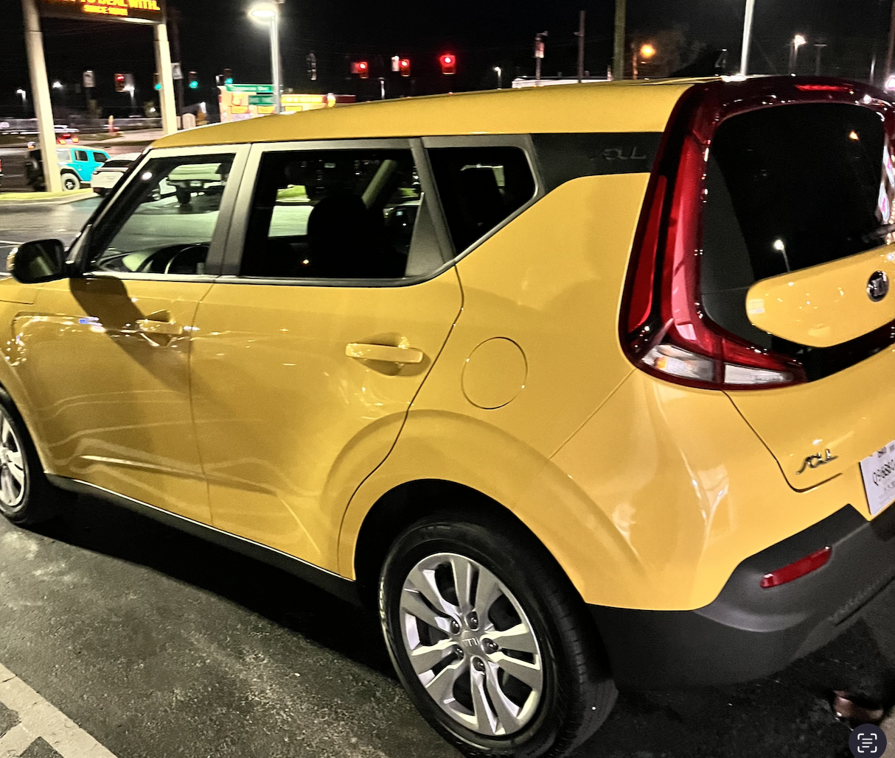

|
The first and only car I have ever owned is my bright yellow Kia soul. Which I know isn't a fan favorite, but in my eyes it's the most beatiful car in the world. I got my car September 27 2023 for $14,000. You can see the photo I took the day I got it on the right. It is a 2020 meaning that it has a center console with a backup camera and apple car play.This means that I can easily connect my spotify and play music. I got it because yellow is my favorite color and yellow is also the safest color for cars. I have always wanted a Kia Soul for some odd reason. I love boxy cars and I hope that she lasts me for a very long time and I am certain that it will get me through college. The car has a spacious backseat which my friends appriciate on longer car rides and the trunk is really tall meaning that I can fit my full laundry basket in the back so I can take my laundry home. My car also gets good gas milage I only fill up my car for around $35 once a month. Though I don't travel very far because I just go home and to campus where I stay for the week. |
 |